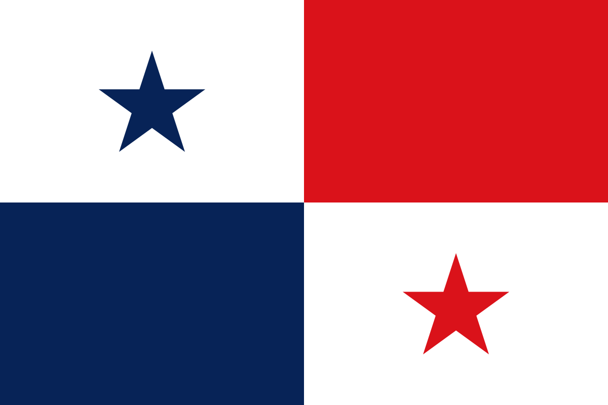
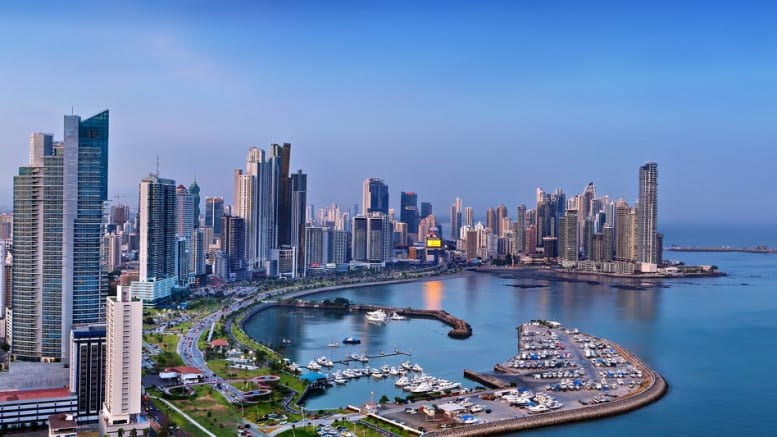
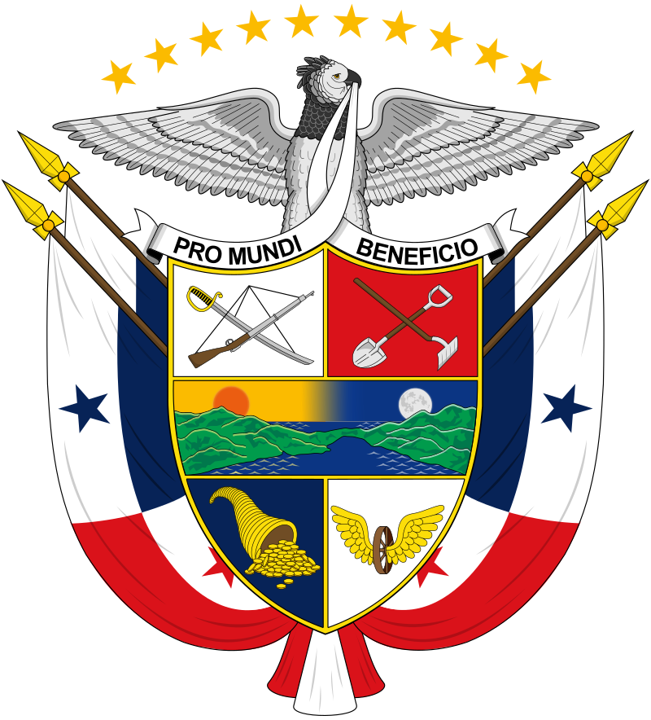
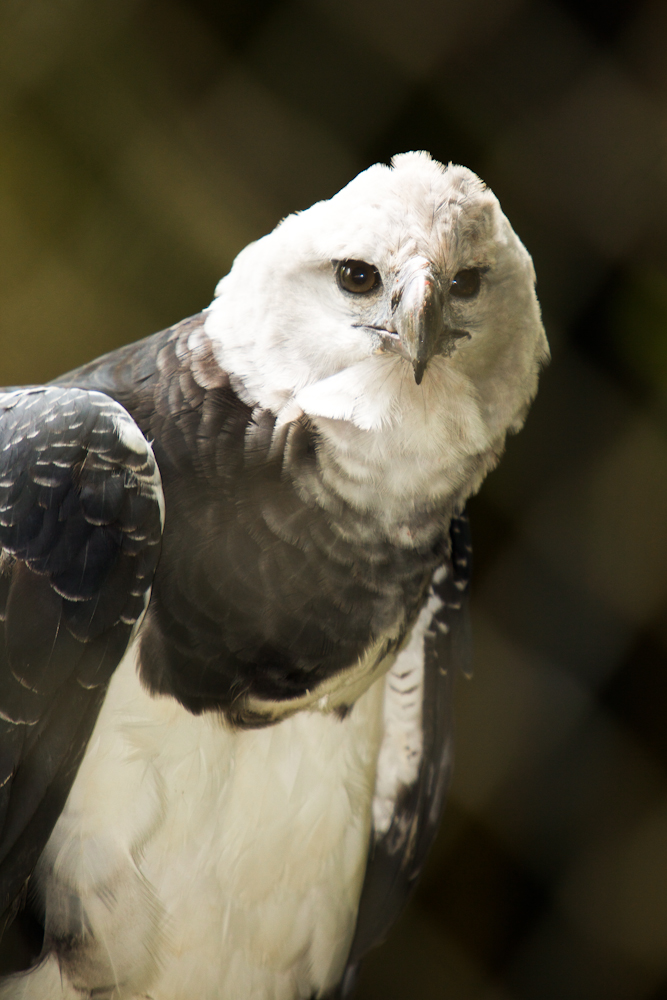

Pagina web informativo sobre Panamá

Acerca de Panamá
Panamá es un país ubicado en el istmo que une América Central y América del Sur. El Canal de Panamá,
un famoso hito de la ingeniería humana, atraviesa su centro y une los océanos Atlántico y Pacífico
para crear una ruta marítima esencial. En la capital, la ciudad de Panamá, los clubes, casinos y
rascacielos modernos contrastan con los edificios coloniales del Casco Viejo y la selva del Parque
Natural Metropolitano.

Simbolos Patrios de Panamá
-Escudo Nacional: El escudo de armas de la República de Panamá es el emblema heráldico que
representa al país, y que junto con la bandera y el himno nacional, tiene la categoría de símbolo
de la nación por mandato de la Ley.

-Ave Nacional: El Águila Harpía fue adoptada como Ave Nacional de Panamá en 2002 según ley 18
del 10 de abril de 2002 siendo el único país del Continente que incorporada como símbolo patrio.

-Arbol Nacional: El escudo de armas de la República de Panamá es el emblema heráldico que representa
al país, y que junto con la bandera y el himno nacional, tiene la categoría de símbolo de la nación por mandato
de la Ley.El Árbol Panamá es considerado como árbol nacional de Panamá gracias a decreto de gabinete número 371
de 26 de noviembre del año 1969.

-Flor Nacional: La Peristeria Elata fue declarada Flor Nacional de Panamá en el año 1980 y es tal la simbología
de esta variedad de orquídea que, de forma anual y siempre durante el mes de septiembre, le rinden homenaje con una
exposición con su nombre, la Expoferia del Espíritu Santo.